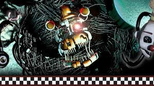

Theories
The FNaF Theorist community
Five Nights at Freddy's has gained a large fan base with both its gameplay, characters, and most importantly, story. The story in the FNaF games isn't immediatley clear when playing them for the first time, leading to fans speculating and theorizing about the story to make sense of the lore. This page outlines some of the most popular theories that stem from the community.
Molten Missing Children's Incident (Molten MCI)
Molten MCI (or Missing Children's incident) is a theory about how Molten Freddy, an animatronic you can salvage in Freddy Fazbear's Pizzaria Simulator, is possesed by the original 5 spirits of the MCI. These spirits include the children possessing Freddy, Bonnie, Chica, Foxy, and Golden Freddy. The evidence for this theory is from FFPS when the character Candy Cadet tells several stories about 5 things being put into one. Additionally, one of Molten Freddy's voice lines is, "One big happy family!" This once again implies that Molten Freddy is an amalgamation of souls trapped into one.